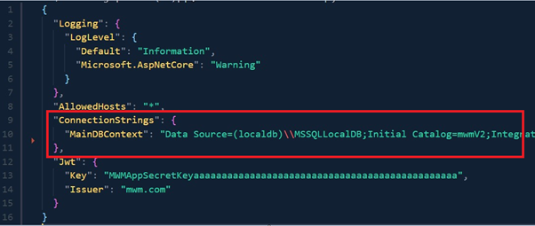

Read Me (Setup Instruction)
To run this project locally:
-
Provide a valid SQL database connection string in the appsettings.json file located in the root level of the server folder (as shown in the figure below).
 - Open CLI and navigate to the root level of the server folder.
- Run command “dotnet run”.
- The application will be hosted on https://localhost:5173
Note:
-
Testing data is needed to run this project without any
error. This includes
- One admin account in order to login to admin dashboard
- Books data to be displayed